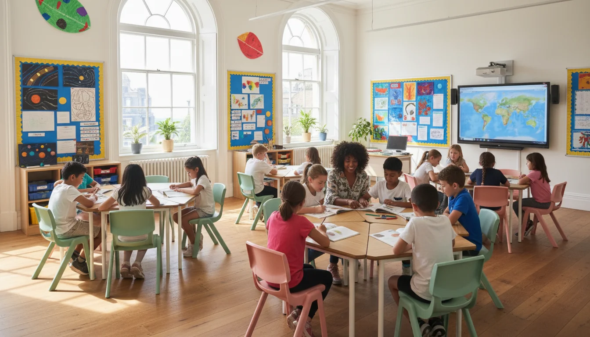
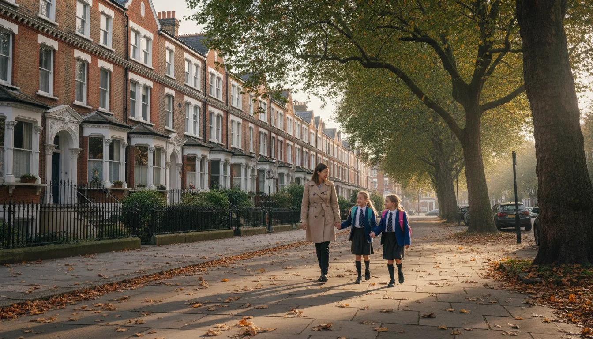

למה בכלל לשלוח ילדים לבית ספר בלונדון
יש לכם דירה בלונדון. או שאתם בדיוק בתהליך של קנייה ושיפוץ. אתם מתכננים להגיע לכמה שבועות, אולי ל-half-term, אולי לטרימסטר שלם. והשאלה שתמיד עולה היא - מה עושים עם הילדים?
אפשר כמובן לסחוב אותם למוזיאונים ולפארקים כל יום. זה עובד לשבוע. אחרי שבועיים כולם מותשים, הילדים משועממים, ואתם לא מצליחים לקדם שום דבר - לא את השיפוץ, לא את הסידורים, כלום.
רישום ילדים לבית ספר בלונדון משנה את המשוואה לגמרי. פתאום שהייה של חודשיים הופכת לאפשרית. הילדים במסגרת, לומדים אנגלית, מכירים חברים. ואתם יכולים לטפל בדירה, להיפגש עם קבלנים, לנהל את השיפוץ - או פשוט לנשום. הדירה בלונדון הופכת מנכס שמבקרים בו לחופשות לבית שני אמיתי שהמשפחה כולה משתמשת בו.
ויש עוד משהו שהורים ישראלים מגלים: ילדים שהולכים לבית ספר בלונדון חוזרים עם אנגלית אחרת. לא האנגלית של שיעורי אנגלית בבית הספר בישראל. אנגלית אמיתית, של ילדים, של חצר, של כיתה. שלושה חודשים בבית ספר בלונדון שווים שנתיים של שיעורים פרטיים.
הדבר הראשון שצריך להבין - ויזה וחוקי רישום
וזה הדבר שישראלים מגלים מאוחר מדי: לא כל ילד יכול להירשם לכל בית ספר בלונדון.
אם אתם בלונדון עם ויזת תייר (visitor visa) - וזה המצב של רוב המשפחות הישראליות בשהייה קצרה - הילדים שלכם לא יכולים להירשם לבית ספר ממלכתי (state school). זה לא עניין של רצון טוב של מנהל בית הספר. זה החוק.
בישראל את רושמת ילד לבית ספר - מגיעים, מביאים תעודות, נגמר. בלונדון המערכת עובדת אחרת לגמרי. שנת הלימודים מחולקת לשלושה טרימסטרים (Autumn, Spring, Summer), לא שני סמסטרים. הרישום לבתי ספר ממלכתיים עובר דרך ה-council המקומי, לא דרך בית הספר עצמו. ויש מושג שנקרא catchment area - אזור גיאוגרפי שקובע לאיזה בית ספר הילד שלכם שייך לפי הכתובת. כלום מזה לא קיים בישראל.
אז מה כן אפשר?
בתי ספר פרטיים ובינלאומיים - אלה לא כפופים לאותן מגבלות. בית ספר פרטי (independent school) יכול לקבל את הילד שלכם גם אם אתם על ויזת תייר, כל עוד השהייה היא פחות משישה חודשים ולא נדרשת ויזת סטודנט.
אם יש לכם אזרחות בריטית, settled status, או ויזת עבודה - הילדים שלכם זכאים לבית ספר ממלכתי בחינם. במקרה הזה, הרישום עובר דרך ה-council המקומי לפי הכתובת שלכם. שווה לדעת שבשכונות פופולריות, בתי הספר הטובים מלאים - ואם הנכס שלכם נמצא ב- catchment area של בית ספר עם דירוג Ofsted גבוה, זה בונוס שכדאי לקחת בחשבון כבר בשלב הקנייה.
שלוש אפשרויות שעובדות לשהייה קצרה

| אפשרות | מתאים ל- | גילאים | עלות לטרימסטר/שבוע |
|---|---|---|---|
| בית ספר בינלאומי | טרימסטר שלם או יותר | 2-18 | 5,000-13,000 פאונד/טרימסטר |
| תוכנית קיץ / summer school | חופשת הקיץ | 4-17 | 500-2,000 פאונד/שבוע |
| holiday club | שבוע עד שבועיים | 4-14 | 250-400 פאונד/שבוע |
בתי ספר בינלאומיים עם רישום גמיש
זו בדרך כלל האפשרות הכי חלקה למשפחות ישראליות. בתי ספר בינלאומיים רגילים למשפחות שמגיעות באמצע שנה, נשארות תקופה, ונוסעות. יש להם תהליך קבלה שמותאם לזה - rolling admissions, בלי ההמתנה של שנה שלמה כמו במערכת הממלכתית.
Dwight School London (צפון לונדון, ליד Finchley Road) - בית ספר IB עם מדיניות ברורה למשפחות בינלאומיות. רישום פתוח לאורך כל השנה. גילאים 2 עד 18.
ICS London (International Community School) - שני קמפוסים, יסודי ותיכון. תוכנית לימודים בינלאומית, אווירה מולטי-תרבותית.
American School in London (ב- St John's Wood) - תוכנית לימודים אמריקאית. אם הילדים שלכם מכירים את השיטה האמריקאית, זה מעבר חלק.
בית ספר בינלאומי הוא גם הפתרון הכי קל מבחינת שפה. הלימודים באנגלית, אבל הצוות רגיל לילדים שהאנגלית שלהם לא שפת אם. אף אחד לא יסתכל על הילד שלכם מוזר.
summer school ותוכניות קיץ
אם אתם מתכננים את השהייה בקיץ - ויש הרבה משפחות ישראליות שעושות בדיוק את זה - תוכניות קיץ הן אופציה מצוינת בלי הפורמליות של רישום לבית ספר.
American School in London Summer Program - מאמצע יוני עד סוף אוגוסט, גילאים 4-17. ספורט, יצירה, פעילויות.
Summer Boarding Courses - קורסי קיץ שמשלבים לימודי אנגלית עם פעילויות, מתאים לילדים שרוצים לשפר את האנגלית.
Felsted School - תוכנית שהייה קצרה לגילאי 10-13, טרימסטר אחד (כשלושה חודשים), כולל פנימייה. נדרשת ויזת תייר בלבד לשהייה של עד שישה חודשים.
holiday clubs ומסגרות לא-פורמליות
לשהיות של שבוע-שבועיים, אין צורך בבית ספר. בלונדון יש מגוון מסגרות פעילות לילדים בחופשות - holiday clubs, קייטנות ספורט, סדנאות אומנות, מוזיאונים שמפעילים תוכניות לילדים. זה פחות מחייב, פחות ביורוקרטיה, ומספיק כדי לתת לילדים מסגרת.
כמעט כל שכונה טובה בלונדון מציעה holiday clubs ב-half-term וב-Easter break. חפשו באתר ה-council המקומי או ב-Hoop - אפליקציה שמרכזת פעילויות לילדים לפי אזור.
כמה זה עולה
בואו נדבר על מספרים, כי זה מה שמעניין.
בית ספר פרטי/בינלאומי - שכר הלימוד נע בין 5,000 ל-8,000 פאונד לטרימסטר ביסודי, ובין 8,000 ל-13,000 פאונד בתיכון. זה לטרימסטר, לא לשנה. שלושה טרימסטרים בשנה. עשו את החשבון. שימו לב: מאז ינואר 2025 בתי ספר פרטיים מחויבים ב-VAT של 20% על שכר הלימוד, ומחירים עלו בהתאם.
לשהייה קצרה של טרימסטר אחד, חלק מבתי הספר מציעים תעריף מופחת או גובים pro-rata - לפי החלק מהטרימסטר שהילד נוכח. לא כולם. תשאלו מראש.
מעבר לשכר הלימוד, תוסיפו:
- מדים (uniform) - כן, גם בבתי ספר פרטיים. בין 200 ל-500 פאונד
- ארוחות - בדרך כלל לא כלולות, 5-10 פאונד ליום
- הסעות - אם בית הספר לא בהליכה מהדירה
- ציוד וטיולים - כמה מאות פאונד לטרימסטר
תוכניות קיץ - בין 500 ל-2,000 פאונד לשבוע, תלוי בתוכנית. תוכניות פנימייה יקרות יותר.
holiday clubs - 50-100 פאונד ליום, או 250-400 לשבוע.
זה לא זול. אבל תחשבו על זה ככה - העלויות השוטפות של נכס בלונדון כוללות council tax, service charge, ביטוח, תחזוקה. שכר לימוד לטרימסטר אחד הוא עוד סעיף בתקציב. אבל הוא מה שהופך את הנכס מדירה ריקה לבית שני אמיתי.
איך בוחרים בית ספר - מה באמת חשוב
לא כל בית ספר בינלאומי מתאים לשהייה קצרה. יש כמה דברים שכדאי לבדוק לפני שמתחילים תהליך רישום.
קרבה לדירה. הלוגיסטיקה של school run בלונדון היא עניין יומיומי. אם בית הספר דורש נסיעה של 40 דקות בכל כיוון, זה שעה וחצי מהיום שלכם שנעלמת. חפשו בית ספר שאפשר להגיע אליו ברגל או בנסיעה קצרה. זו גם סיבה לחשוב על בית הספר כבר כשבוחרים שכונה.
גישה לילדים בינלאומיים. לא כל בית ספר רגיל לקבל ילד לטרימסטר אחד. שאלו ישירות: האם קיבלתם בעבר ילדים לתקופה קצרה? יש תוכנית שילוב? בתי ספר כמו Dwight ו-ICS בנויים לזה. בתי ספר בריטיים פרטיים קלאסיים - פחות.
דירוג Ofsted. אם יש לכם זכאות ל-state school, דוחות Ofsted הם הכלי המרכזי. מאז נובמבר 2025 Ofsted עברו ל-report cards עם דירוגים לפי תחומים - מ-Exceptional דרך Strong standard ו-Expected standard ועד Causing concern. זה פומבי, אפשר לבדוק באתר. אבל שימו לב - Ofsted מדרג בתי ספר ממלכתיים. בתי ספר בינלאומיים נבדקים על ידי ISI (Independent Schools Inspectorate) או CIS (Council of International Schools).
תמיכה בשפה. בית ספר עם ניסיון בילדים בינלאומיים יציע EAL - English as an Additional Language. זה אומר שיש מורה או מורים שמלווים ילדים שהאנגלית שלהם לא שפת אם. תשאלו על זה. זה ההבדל בין ילד שצף ובין ילד שיושב בכיתה ולא מבין מה קורה.
אווירה. בקרו אם אפשר. או לפחות בקשו סיור וירטואלי. תראו איך הילדים מתנהגים, איך הצוות מתייחס, מה האווירה במסדרונות. הרגש שלכם כהורים שווה יותר מכל דירוג.
גודל הכיתה. בבתי ספר בינלאומיים הכיתות בדרך כלל קטנות יותר - 15-20 ילדים, לעומת 30+ בממלכתי. לילד שמגיע לתקופה קצרה ולא מדבר אנגלית שוטפת, כיתה קטנה עושה הבדל ענק.
התהליך - מה צריך ומתי להתחיל
מסמכים
רוב בתי הספר הבינלאומיים ידרשו:
- תעודות מבית הספר בישראל (מתורגמות לאנגלית)
- דרכון הילד
- אישור חיסונים
- מכתב מבית הספר בישראל שמאשר שהילד רשום ובחופשה מאושרת
- הוכחת כתובת בלונדון (חוזה שכירות או הוכחת בעלות על הנכס)
- לפעמים מכתב המלצה ממורה (בעיקר לתיכון)
- אישור ביטוח רפואי שתקף בבריטניה
כמה מבתי הספר ידרשו גם מבחן קבלה קצר - בעיקר באנגלית ובמתמטיקה. זה לא מבחן מיון תחרותי. זה כדי לדעת לאיזו רמה לשבץ את הילד.
לוח זמנים
| מסגרת | מתי להתחיל | תהליך |
|---|---|---|
| בית ספר בינלאומי | 3 חודשים מראש לפחות | מייל, טופס, ראיון (אפשר אונליין), אישור |
| תוכנית קיץ | ינואר-פברואר | הרשמה אונליין, מתמלא מהר |
| holiday club | שבוע-שבועיים מראש | הרשמה ישירה באתר |
עוד דבר חשוב לגבי תזמון: שנת הלימודים הבריטית מתחילה בספטמבר ומסתיימת ביולי. הטרימסטרים הם Autumn (ספטמבר-דצמבר), Spring (ינואר-מרץ/אפריל), ו-Summer (אפריל-יולי). אם אתם מתכננים שהייה של טרימסטר שלם, כדאי להתאים ללוח הזמנים הבריטי ולא לישראלי.
הגשה מישראל
הכל אפשרי מרחוק. רוב בתי הספר הבינלאומיים רגילים לתהליך קבלה אונליין - טפסים, ראיונות בזום, שליחת מסמכים במייל. לא צריך להיות בלונדון כדי להתחיל את התהליך.
טיפ אחד: שלחו מייל ראשוני קצר ל-admissions, הסבירו שאתם משפחה ישראלית עם נכס בלונדון ומעוניינים בשהייה של טרימסטר אחד. רוב בתי הספר הבינלאומיים רגילים לפניות כאלה ויחזרו אליכם עם תשובה ברורה תוך ימים.
מה הילדים באמת חווים

הבריטים רציניים לגבי תלבושת אחידה. גם בבתי ספר פרטיים. הילד שלכם, שרגיל להגיע לבית הספר בישראל עם טי-שירט וכפכפים, ילבש חולצה מכופתרת, עניבה, ומעיל של בית הספר. זה שוק תרבותי קטן, אבל הילדים מתרגלים מפתיע מהר.
מבחינת שפה - ילדים ישראלים עם אנגלית בסיסית (ורוב הילדים היום מגיעים עם בסיס מיוטיוב ומנטפליקס) מסתדרים. בבתי ספר בינלאומיים הצוות מאוד מנוסה בילדים שהאנגלית שלהם בתהליך. אף אחד לא מצפה לאנגלית מושלמת מיום ראשון.
יום הלימודים הוא בדרך כלל 8:45 עד 15:30 - קצר יותר ממה שמוכרים בישראל. ה-school run הוא מוסד בפני עצמו - הורים עומדים בשער, מחכים, מדברים. אם אתם בלונדון לתקופה, זה גם הזדמנות שלכם להכיר הורים אחרים.
אחרי בית הספר יש after-school clubs - ספורט, אומנות, מוזיקה, דרמה - שמאריכים את היום עד 16:30-17:00. שווה לרשום, גם כדי שהילד יכיר חברים בסביבה פחות פורמלית.
ואוכל? בבתי ספר בריטיים ארוחת הצהריים היא school lunch - או שמביאים packed lunch מהבית. שכחו מהצהריים החמים שהילדים מכירים מישראל. כריך, פרי, וחטיף. הילדים מסתגלים. ההורים מסתגלים פחות.
ומה שהכי מפתיע את הורים ישראלים: הילדים לא רוצים לחזור. הם מכירים חברים מכל העולם, מתרגלים לקצב, מתחילים לדבר אנגלית בלי מאמץ. עד שמגיע הזמן לחזור לישראל, הם שואלים מתי חוזרים ללונדון.
יש עוד דבר שהורים ישראלים לא מצפים לו: הנימוס. ילדים בריטיים אומרים please ו-thank you כל שלוש שניות. הילד שלכם, שרגיל לסגנון הישראלי הישיר, ילמד תוך שבוע. ופתאום גם בבית הוא מנומס יותר. זה אחד הבונוסים הלא צפויים.
וזה בדיוק הנקודה. בית ספר בלונדון הופך את הדירה השנייה מהשקעה שעל הנייר לחלק מהחיים של המשפחה. הילדים יש להם מקום, חברים, שגרה. אתם יש לכם שקט. וכשאתם בוחרים שכונה, אתם בוחרים לא רק לפי מחיר ואווירה - אלא גם לפי מה שיש סביב בשביל הילדים.
בלונדון, הילדים הם לא בעיה שצריך לפתור. הם הסיבה שהדירה השנייה הופכת לבית.